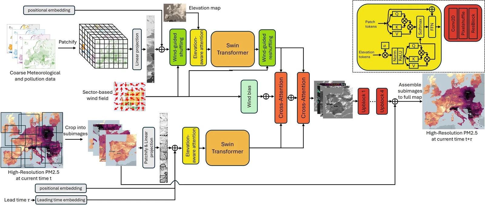
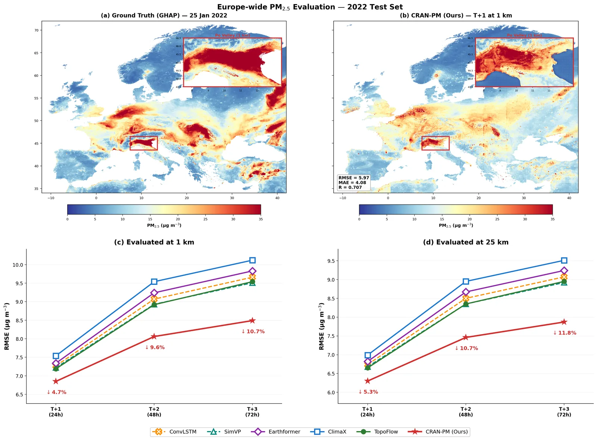
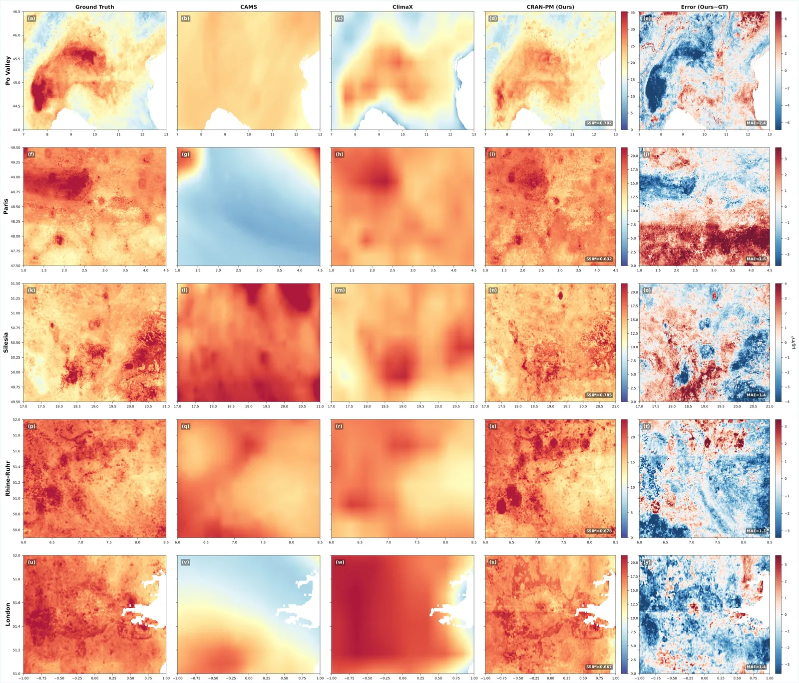
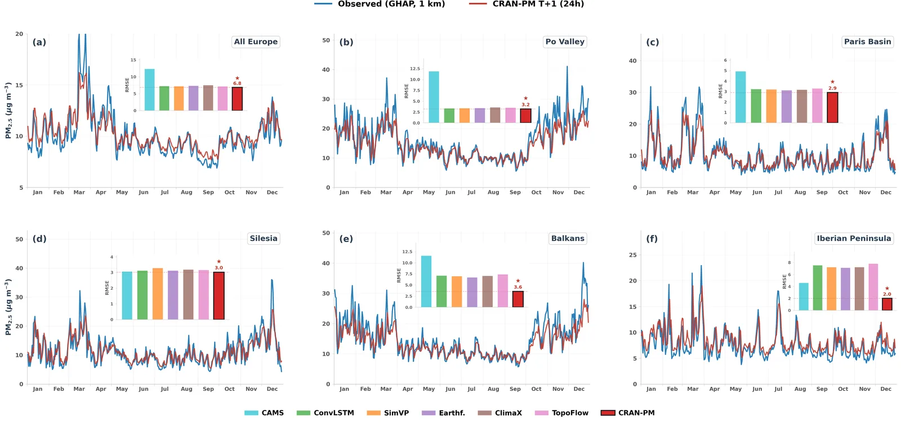
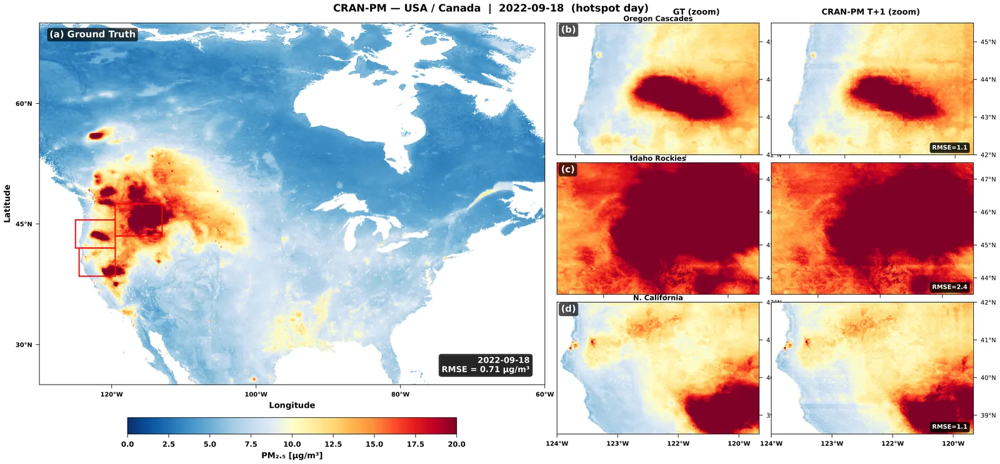
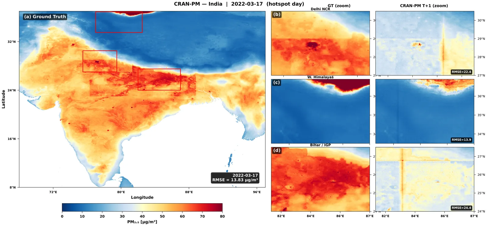

CRAN-PM is a dual-branch Vision Transformer that predicts daily PM2.5 at 1 km resolution across all of Europe. A single forward pass produces a 29-million-pixel map in about 1.8 seconds on a single GPU.
The architecture combines a coarse global branch (25 km, captures continental dynamics) with a fine local branch (1 km, captures urban-scale detail), connected by cross-resolution attention and an elevation-aware bias. A wind-driven patch reordering module mirrors the design used in TopoFlow.
The most striking result is zero-shot transfer: trained only on European data (2017–2021), the model produces accurate PM2.5 predictions over the United States, Canada and India without any fine-tuning, including capturing the 2023 Canadian wildfire smoke plume drifting into the eastern US.
1 km
Resolution
across Europe
96M
Parameters
dual-branch ViT
1.8s
Inference
29M pixels / map
0-shot
Transfer
USA, Canada, India
Key ideas
- Two-branch cross-resolution attention. Coarse 25 km global branch captures synoptic atmospheric flow; fine 1 km local branch captures urban gradients; cross-attention fuses them.
- Elevation-aware attention. A learnable bias keyed on a digital elevation model lets the network respect topographic constraints on pollutant transport.
- Wind-driven patch reordering. Patches are re-sorted along the wind direction so attention flows downstream of sources.
- Zero-shot continental transfer. Trained on Europe (2017–2021), tested on Europe (2022), then evaluated unchanged on USA, Canada and India. The model captures wildfire smoke and Indo-Gangetic Plain hotspots out of the box.
- PixelShuffle decoder. Progressive upsampling from coarse latent to 1 km output, no blurry interpolation.
Visualisations

Two-branch cross-resolution architecture
Europe-wide evaluation: ground truth, prediction, RMSE
Spatial detail: Po Valley, Paris and others
Temporal evolution across six regions
Zero-shot USA & Canada (wildfire smoke)
Zero-shot India: Indo-Gangetic PlainResources
Credits
- Lead author
- Ammar Kheder
- Status
- Preprint on arXiv (2026)
- Compute
- LUMI supercomputer (AMD MI250X GPUs), distributed training
- Framework
- PyTorch with Distributed Data Parallel
- Affiliation
- LUT University, Atmospheric Modelling Centre (AMC-Lahti)